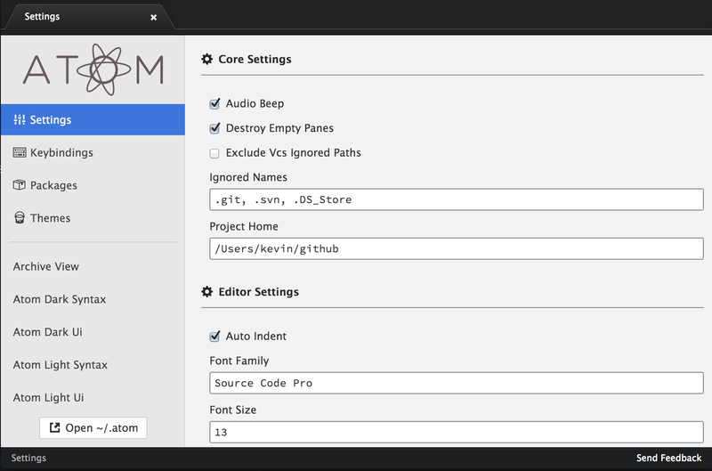
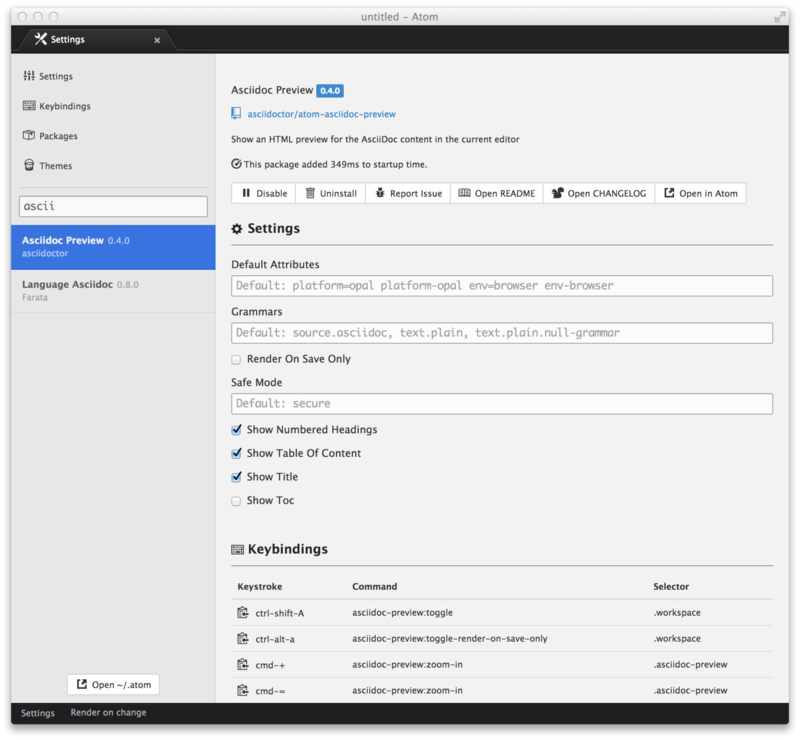
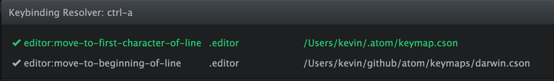
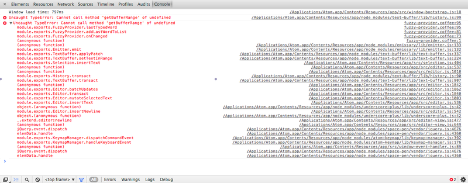
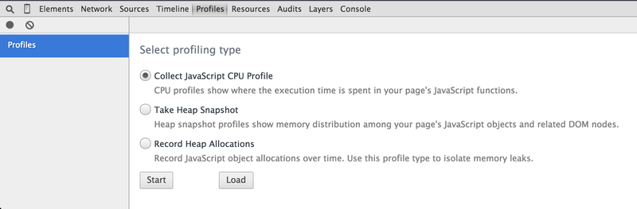
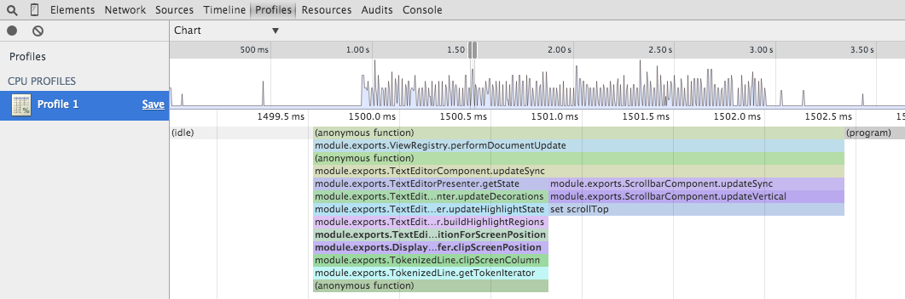

调试#
Atom拱了一些工具来帮助你理解预料之外的行为和调试问题。这篇指南介绍了一些工具和方法用于帮助你调试，以及提供了一些提交工单（issue）时的帮助信息。
升级到最新版本#
你可能遇到了在最新版本已经修复的问题。
如果你从源码中编译Atom，需要拉回（pull）master的最新版本并重新构建。
如果你使用发布版本，检查你所使用的Atom是什么版本：
$ atom --version 0.178.0-37a85bc
访问发布列表来查看是否有更新的版本。你可以从发布页面下载Atom来升级到最新的版本，或者通过应用中的自动升级工具。应用中的自动升级工具在你重启Atom，或者点击Atom > Check for Update菜单之后，会检查和下载新的版本。
检查链接的包#
如果你开发或者发布Atom的包，可能会有一些遗留的包链接到~/.atom/packages或者~/.atom/dev/packages目录下。你可以使用：
$ apm links
来列出所有链接的开发包。你可以使用apm unlink命令来移除链接，详见apm unlink --help。
检查Atom和包的设置#
在一些情况下，预料之外的行为可能是Atom或者某个包中的错误配置或者缺少配置造成的。
使用cmd-,来打开Atom的设置视图，或者Atom > Preferences来打开菜单选项。

在设置面板中检查Atom的设置，每个选项在这里都会有个详细的描述。例如，如果你希望Atom使用硬tab（真的tab）而不是软tab（空格），你应该取消“Soft Tabs”选项。
由于Atom自带一些包并且你可以自己安装附加的包，检查所有包的列表以及他们的设置。例如，如果你喜欢移除编辑器中间的竖直线，禁用Wrap Guide包。另外，如果你希望Atom移除行尾的空白字符，或者确保文件末尾有个空行，你可以在Whitespace包的选项中设置。

检查快捷键#
如果你按下快捷键之后没有执行命令，或者执行了错误的命令，那个键位的快捷键可能出了些问题。Atom自带keybinding resolver，一个小巧的包来帮助你理解执行了哪个快捷键。

keybinding resolver会向你展示现有快捷键的列表，列表中包含以下内容：
- 快捷键的命令
- 快捷键有效时，用于定义上下文的CSS选择器
- 快捷键被定义的文件
如果匹配到多个快捷键，Atom会根据选择器的特性和以及他们被加载的顺序来决定执行哪个快捷键。如果你想要触发的命令在keybinding resolver中列出，但是并没有执行，一般由以下两种原因造成：
- 快捷键并没有在选择器定义的上下文中使用。例如，你不能在树视图没有焦点的情况下触发“Tree View: Add File”命令。
- 有另一个快捷键具有更高的优先级。这通常发生在你安装的包的快捷键和现有的快捷键冲突的时候。如果这个包的快捷键具有更高的特异性的选择器，或者更晚被加载，它就会覆盖现有的快捷键。
Atom首先会加载核心功能的快捷键，之后才是用户定义的快捷键。由于用户定义的快捷键在随后加载，你可以使用keymap.cson文件来调整快捷键并解决问题。例如，你可以使用unset!指令来移除快捷键。
如果你发现一个包的快捷键优先级要高于核心功能包，向这个包的GitHub 仓库提交一个工单可能是个好主意。
查看是否在安全模式下出现问题#
Atom绝大多数的功能都来源于你安装的包。一些情况下，这些包可能会导致预料之外的行为、问题或者性能问题。
从命令行在安全模式下启动Atom，来检查是否是你安装的一个包导致了问题：
$ atom --safe
这会启动Atom，但是并不会加载~/.atom/packages和~/.atom/dev/packages中的包。如果安全模式下问题不再出现，那么可能那些包之一导致了问题。
要弄清楚到底是哪个包导致了问题，正常启动Atom，并且按下cmd-,来打开设置。由于设置可以让你禁用每个包，你可以依次禁用每个包，直到问题不再发生。在你禁用每个包来确保问题不再出现之后，重启（cmd-q）或者重新加载（cmd-ctrl-alt-l）Atom。
当你找到导致问题的包之后，你可以禁用或者卸载这个包，并且考虑向这个包的GitHub仓库提交工单。
检查你的配置文件#
你可能在Atom的初始化脚本或者样式表中定义了一些个性化的功能。在一些情况中，这些个性化的调整可能会导致问题，所以清除这些文件，并重启Atom。
检查在开发者工具中的错误#
当Atom中抛出了一个错误，开发者工具会在控制台标签页自动展示记录的错误。而如果开发者工具在错误触发之前打开，错误的整个栈轨迹会被记录：

如果你可以重现这个错误，使用这种方法来得到全部的栈轨迹。栈轨迹可能会指向你的初始化脚本，或者安装的某个特定的包，可以禁用它们并且向Github仓库提交工单。
在开发者页面的CPU profiler中判断性能问题#
如果你在特定的情况中发现了性能问题，如果报告中包含了Chrome的CPU profiler截图，提供了一些什么东西比较慢的洞察，你的报告会很有用处。
要运行profiler，在命令面板中打开开发者工具（“Window: Toggle Dev Tools”），访问Profiles标签页，选择Collect JavaScript CPU Profile并点击start按钮。

然后返回Atom并且执行速度慢的操作来做记录。结束之后按下stop按钮。切换到Chart视图，会出现一副记录操作的图片。尝试放大缓慢的部分，并且截图来包含到你的报告中。你也可以保存并发送profile数据，通过按下左边面板中的名字（例如Profile 1）旁边的Save按钮。

检查你是否安装了开发工具链#
如果你在使用apm install安装一个包时出现问题，可能是因为那个包依赖了使用本地代码的库。所以你需要安装C++编译器和Python来安装它。
你可以运行apm install --check来查看Atom是否能够在你的机器上编译本地代码。
关于更多信息，在构建指导中查看你的平台上需要先满足的条件。